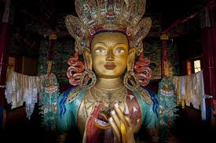

About leh Ladakh
Leh Ladakh, in northernmost India (Union Territory of Ladakh), is a dramatic high-altitude desert known for its barren mountains, Tibetan Buddhist culture, and breathtaking landscapes. It's a dream destination for bikers and adventure seekers.
Culture & Tradition
- Strong influence of Tibetan Buddhism
- Locals celebrate Hemis Festival, Losar, and Ladakh Festival
- People wear woolen robes (Goncha), boots, and colorful headgear

Famous Dishes
- Thukpa (noodle soup)
- Momos (dumplings)
- Skyu (traditional pasta dish)
- Butter tea and Yak cheese
Best Time to Visit
- May to September when roads are open and weather is pleasant
Things To Do
- Bike ride on Khardung La (world’s highest motorable road)
- Visit Pangong Lake and Tso Moriri Lake
- Explore Magnetic Hill, Shanti Stupa, and Hemis Monastery
- Experience river rafting in Zanskar River
- Visit Lamayuru Moonland for surreal landscapes
Average budget(per day)
Budget: ₹1500 -₹2000
Mid-range: ₹2500–₹4000
Luxury: ₹5000 +